Velodrome Vigorelli
Academic Project – Redevelopment of the Vigorelli Velodrome, Milan IUAV University of Venice, 2013–2014 | Supervisor: Prof. Angelo Villa
The redevelopment project for the Maspes-Vigorelli Velodrome seeks to restore a key piece of Milan’s architectural and sporting heritage by transforming it into a contemporary, multifunctional facility open to the city year-round. Located in the north-western quadrant of Milan, near the historic Trade Fair district, the intervention reimagines the Vigorelli as a vibrant public space dedicated to sport, culture, and community life.

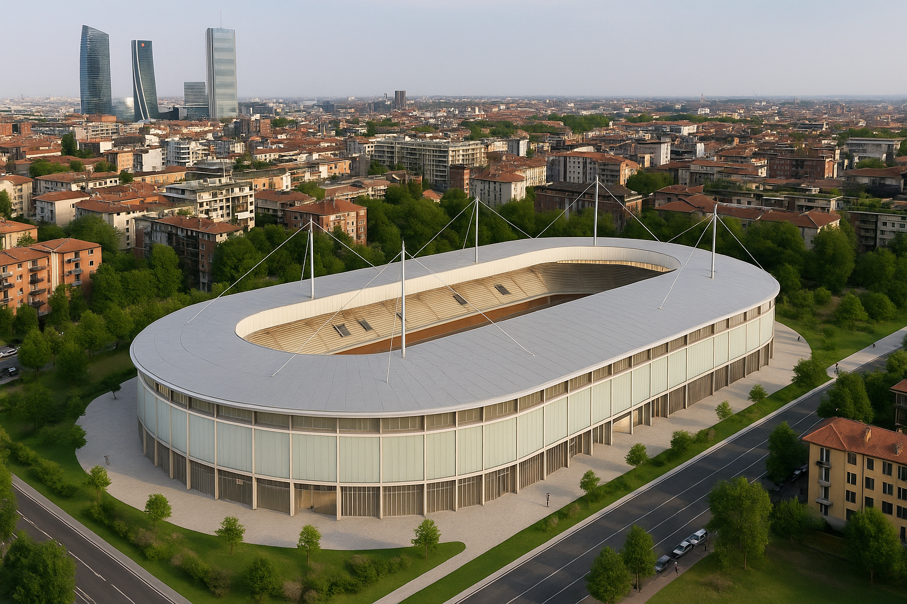
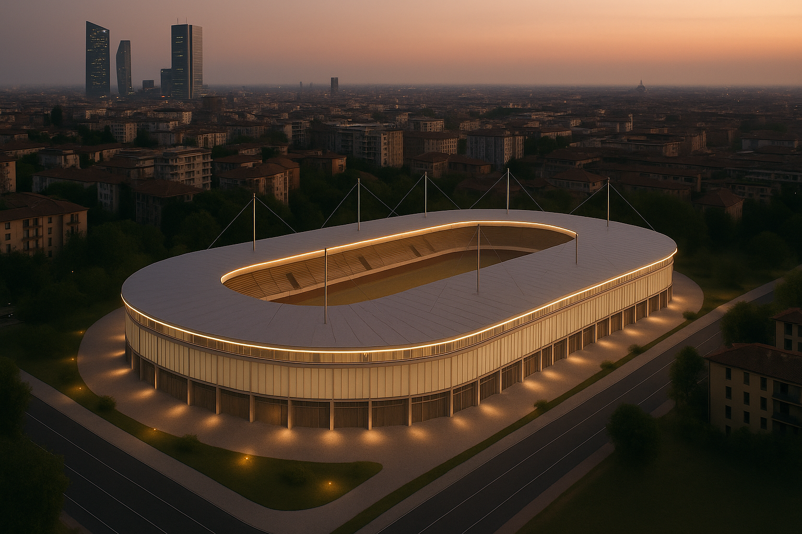
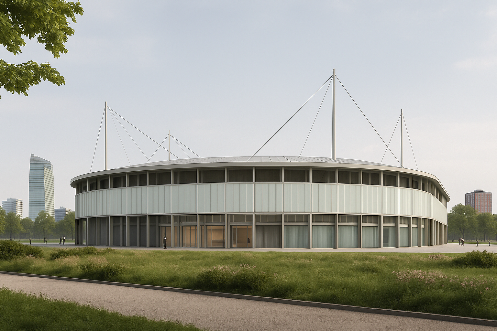
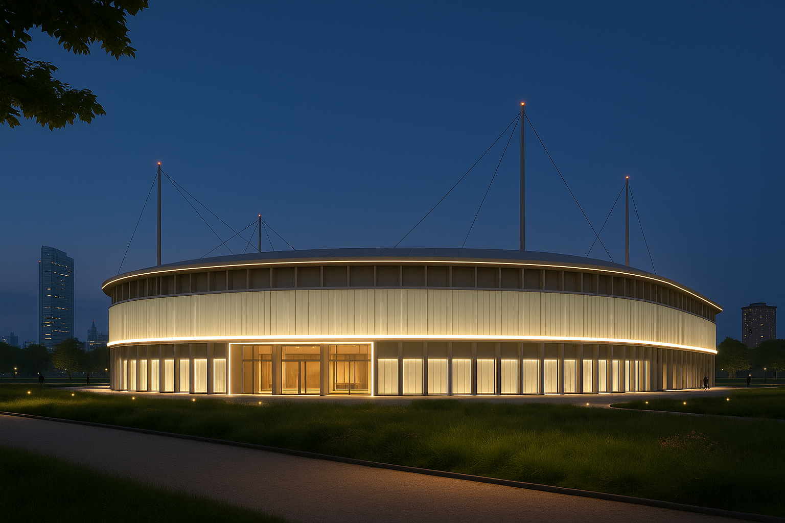
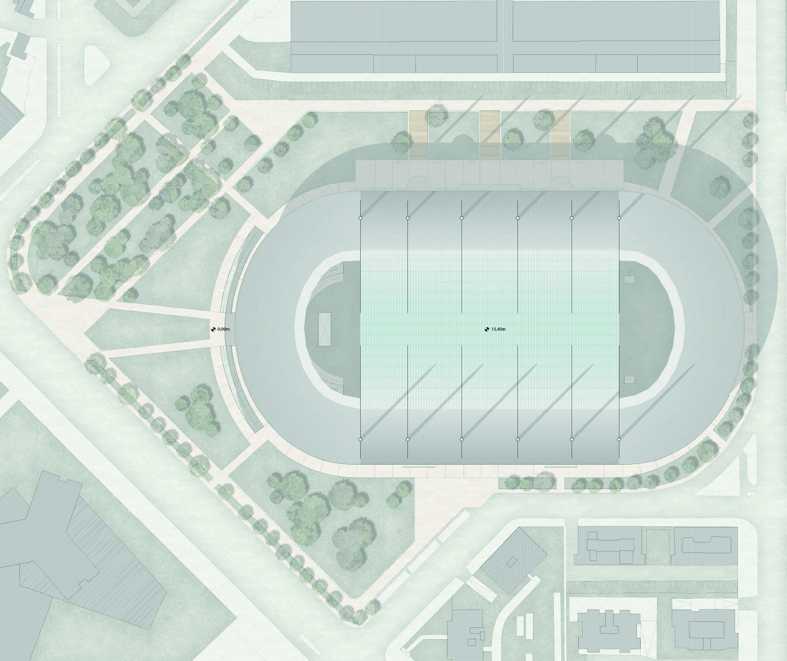
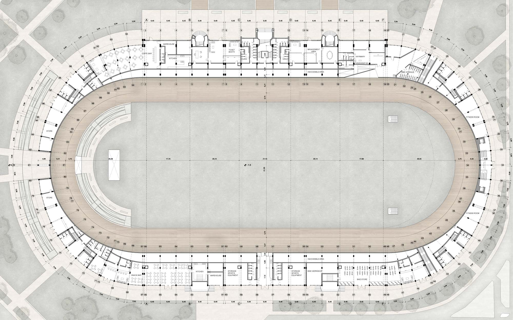
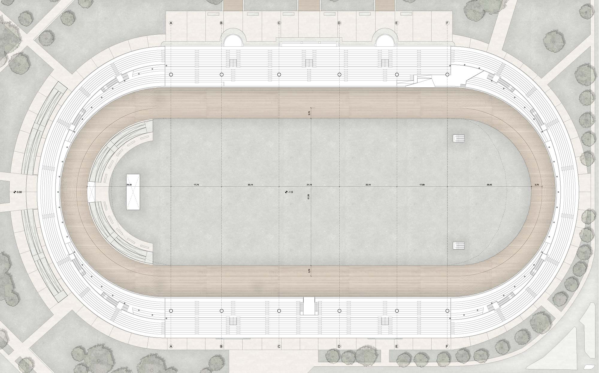
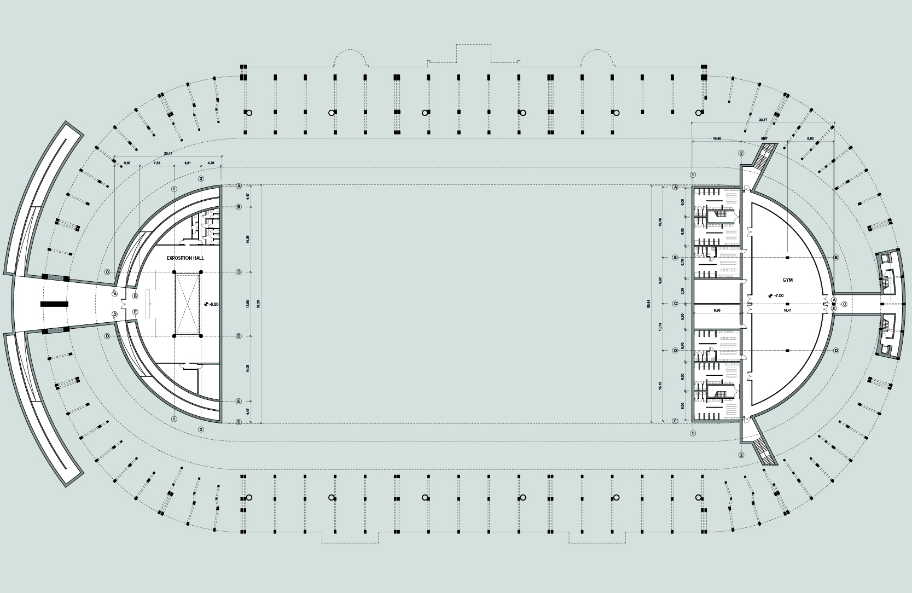
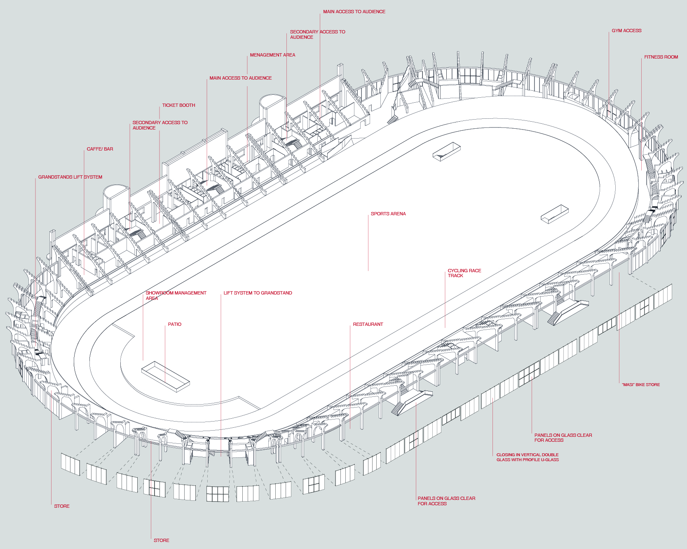
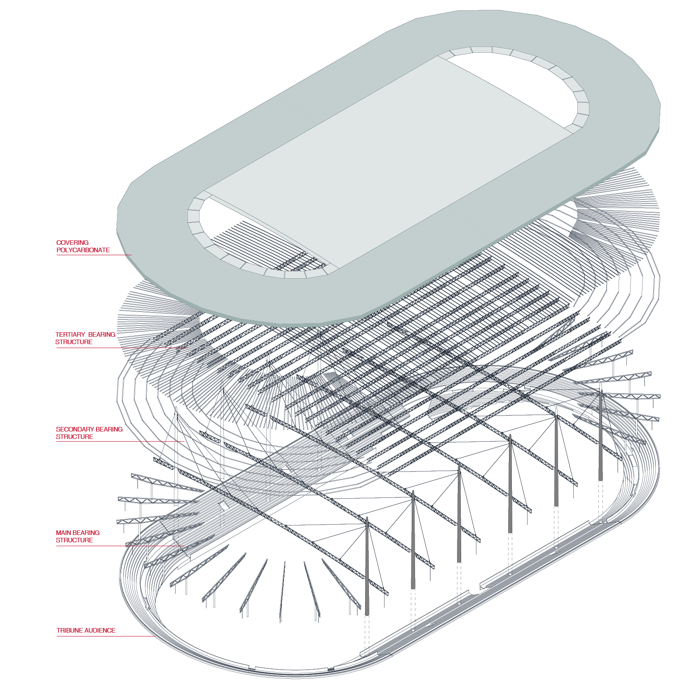
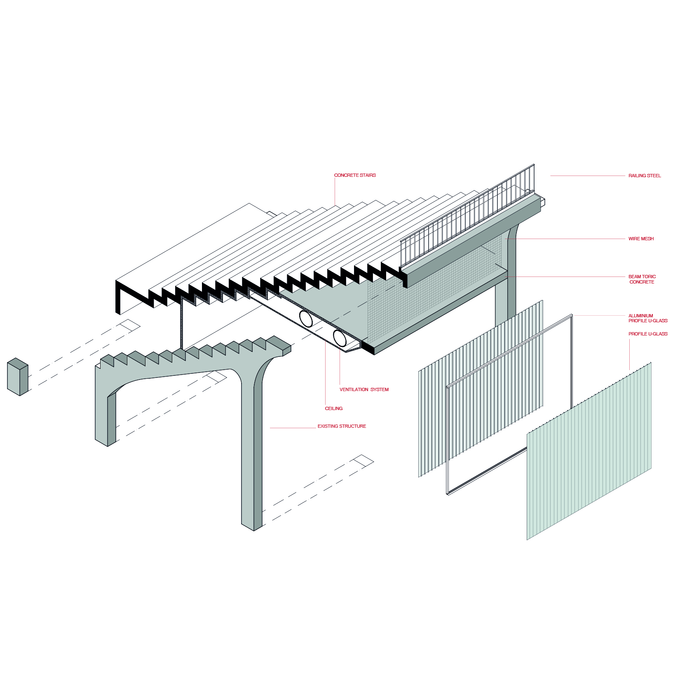
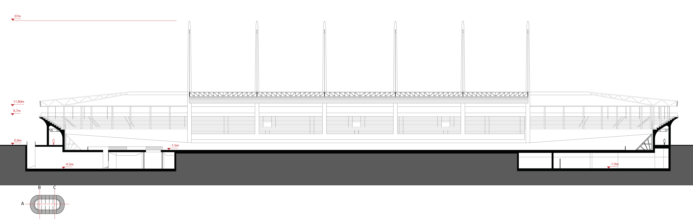
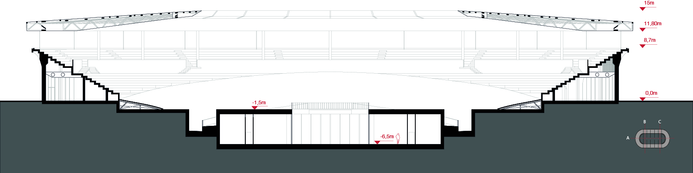
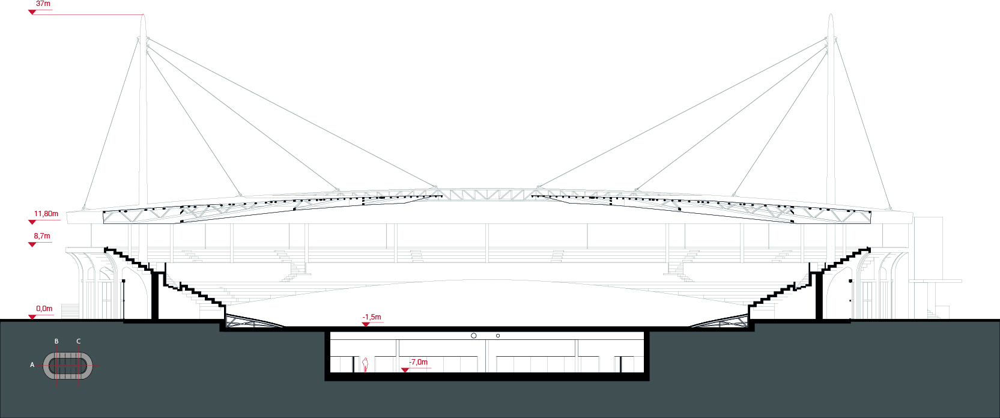